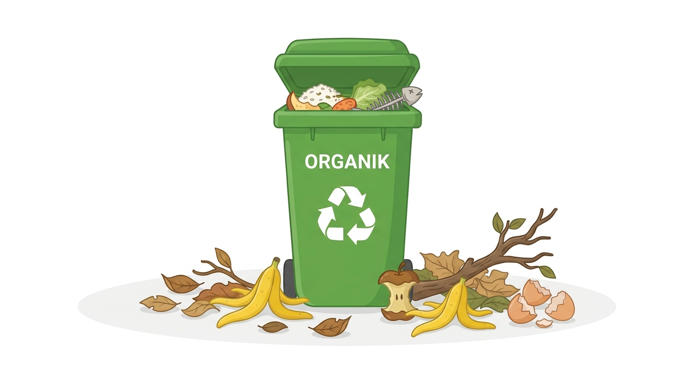
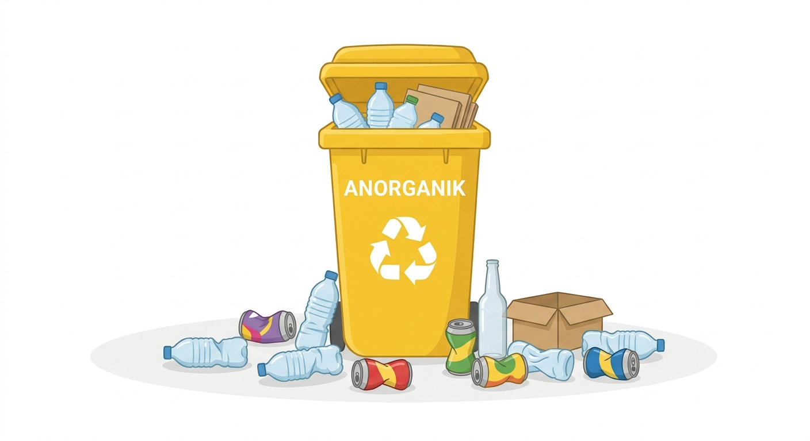
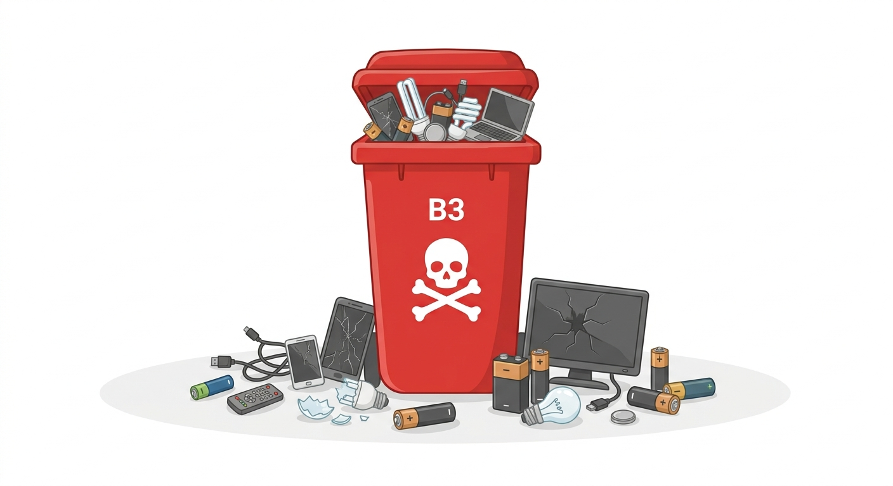

1. Sampah Organik
Sampah organik adalah sampah yang berasal dari sisa makhluk hidup (alam) yang dapat mudah membusuk dan terurai secara alami tanpa campur tangan manusia yang rumit.
Contoh: Sisa sayuran, buah-buahan, daun kering, dan sisa makanan.
Pemanfaatan: Dapat diolah kembali menjadi pupuk kompos atau pakan ternak.

2. Sampah Anorganik
Sampah anorganik merupakan sampah yang berasal dari bahan-bahan non-hayati atau sintetis. Jenis sampah ini sangat sulit atau bahkan tidak bisa terurai secara alami oleh mikroorganisme.
Contoh: Botol plastik, kaleng aluminium, kantong plastik, dan kaca.
Pemanfaatan: Dapat didaur ulang (recycle) menjadi kerajinan tangan atau barang bernilai ekonomis.

3. Limbah B3 (Bahan Berbahaya & Beracun)
Limbah B3 adalah sisa suatu kegiatan yang mengandung bahan berbahaya dan beracun. Jika dibuang sembarangan, limbah ini dapat mencemari lingkungan serta membahayakan kesehatan manusia.
Contoh: Baterai bekas, lampu neon, sisa obat-obatan kimia, dan kaleng cat semprot.
Penanganan: Memerlukan wadah khusus dan tidak boleh dicampur dengan sampah rumah tangga biasa.
